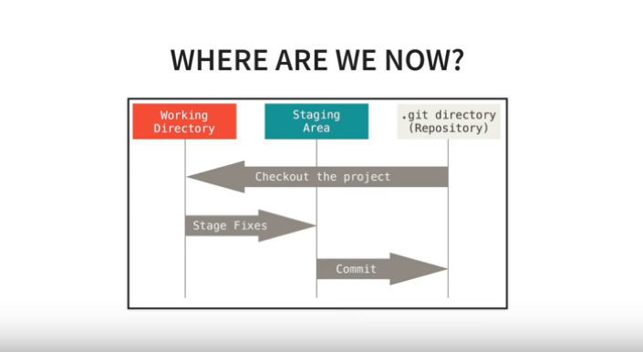

Get Started with Git
You can get by most of your life without Git, until suddenly you have to write code with three other people, or worse, have to one day start maintaining Amy's computer vision codebase after she leaves the company to become a CTO. Then you have half a day to become an expert in this quirky little version control tool. Not to worry. These teachers have you covered.

I asked my friends and colleagues on LinkedIn and Twitter if the knew of any Git tutorials they would recommend. I was overwhelmed by the response. There are a lot to choose from. However, a few rose to the top as being both very popular and exceptionally well suited for someone just starting out. But for every resource listed here, there are five others in the threads, most of them very good.
Corey Schafer's YouTube tutorials
This is an excellent all around introduction to Git at the command line. It stays practical, with brief forays into the underlying mechanisms where necessary. The video format provides extra momentum.
Pro Git, written by Scott Chacon and Ben Straub

Of you prefer a book format, Pro Git is an excellent way to go. Hosted on the Git website, it enjoys the blessing of an an official resource. It is comprehensive and well put together.
Happy Git and GitHub for the useR by Jenny Bryan, the STAT 545 TAs, Jim Hester

If you happen to be an R user, you will never find a better resource than this. Practical, cheeky, brilliantly organized, it is a tour de force of instructional writing. Note that this guide covers both Git and GitHub, two distinct, but tightly interrelated tools.
Even if you're not an R user, I highly recommend a look through the accompanying manifesto: Excuse me, do you have a moment to talk about version control?
GitHub Labs

If you want to focus on using GitHub for collaborative projects, or if the command line gives you the heebie-jeebies, this is a wonderful set of videos, mini articles, and hands-on exercises.
Other goodies
There is a deep bench of Git resources you can use to enrich your training.
-
Learn Git Branching
Gives video game-style (graphical and interactive)
lessons on how to use git commands.

-
Roger Dudler
Presents the git boiled down to its essence.
It has a beauty in simplicity. A tutorial haiku.

-
Red Badger
Gives a shockingly accessible treatise on how it all works,
explained using elves and orcs.

-
Oh shit, git!
Helps you figure out what to do when things go horribly wrong,
which they will, at some point.
It also comes in
a without-swears version .

There's a rich variety here, and all of it is top quality. You'll be ready to start branching and merging by the end of the day.